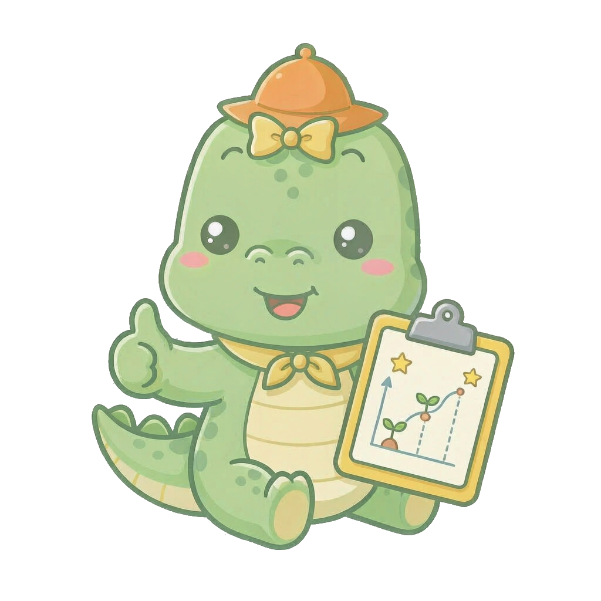

9:41
📶 🔋
🌿
植物识别
拍一张，认出它是什么、有没有病
I'm
Avo
🐊，拍张叶子 snap 给我，我来认它是什么、有没有病～
🍅
番茄叶片 · 已选择
点击重新拍照 / 选图
拍照
从相册选择
物种
番茄 (Tomato) · 0.94
病害
番茄早疫病 · 0.87
处理建议：
早疫病喜湿，建议摘除病叶并加强通风；可喷施代森锰锌类保护剂，连续阴雨后重点预防。
🌱
嫁接分析
接穗 + 砧木，先看能不能嫁
接穗、砧木都给我看看，能不能嫁、风险多大，我来判 🌱
＋
接穗
拍照/相册
＋
砧木
拍照/相册
接穗品种
番茄
▾
砧木品种
点击选择 / 输入
▾
分析
DECISION · defer
暂缓嫁接
检测到砧木疑似病害信号（置信度 0.87）。病害症状可能与嫁接不亲和症状混淆，建议先隔离观察或进一步检测，再尝试嫁接。
接穗 · 健康
0.92
砧木 · 疑似病害
0.87
兼容性评分
78 / 100
📈
恢复追踪
像收集奶茶一样，收集每株植物的好转

每天来打卡一张，我陪你看着它一天天好起来 ↑
切换追踪的植物（可同时追踪多株）
🍅 番茄 · 1号盆
▾
早疫病恢复 · Day 5 / 15
↑ 整体好转
‹
2026 年 10 月
▾
›
年份
月份
↑
好转
↓
恶化
灰格 = 未记录
框 = 今天
This Month
12 天
· 2 株植物
🌿 本月恢复王：番茄（健康置信度 0.40 → 0.78）
历次记录
＋
‹
10月5日 · 打卡记录
🍅 番茄 · 1号盆
🌿
当日上传照片 · 叶面正面
健康置信度
0.62
与上次对比
↑ +0.08（好转）
病害状态
番茄早疫病（观察恢复中）
恢复进度
Day 5 / 15
当日备注
新叶展开，旧斑干缩
处理建议：
保持当前方案，继续观察新叶长势。
💬
社区
问问题、晒技巧
来社区聊聊种植故事、晒晒你的小苗吧 🌿
＋
‹
小
小绿同学
关注
↗
🍅
帖子配图
标题
2 小时前 · 病害求助
正文
共
0
条评论
0
0
0
🌿
识别
🌱
嫁接
📈
追踪
💬
社区